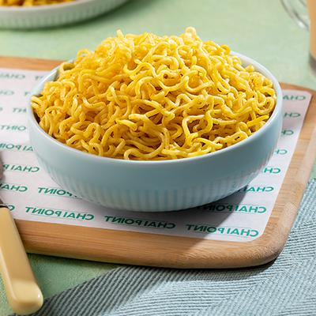

Masala Maggi

Masala maggi
Description:
Ingredients:
- Maggi two minute noodles-2 packs
- Water-400ml
- Gas/Induction stove
- Cooking Vessel
- Maggi masala(optional)
Steps for preparation:
- Add about 400ml of watter to the vessel
- Mount the vessel on the stove and heat it at a moderate temperature
- Open the noodle packets